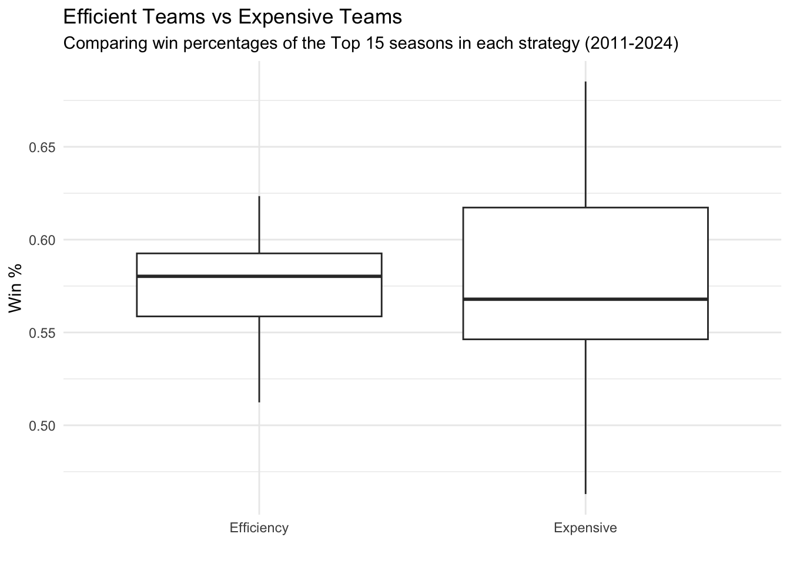

For this post, I’m exploring MLB payrolls. Recently, there has been some controversy throughout the league due to big market teams, especially the dodgers, spending seemingly infinite amounts of money to sign all the big names in free agency. Currently in the MLB, there is no hard salary cap. There are taxes for going over a certain amounts, but for big market teams those taxes seem to not matter. I’m hoping to get to the bottom of how big of a problem this actually is. Do team’s who spend the most money really perform significantly better?
To investigate this question, I’m working with a data set from Kaggle called MLB Team Payrolls 2011-2024. It contains both salary and performance data for every MLB team from 2011-2014. To approach this question, I wanted to not only see how salary effects winning, but also explore efficiency. What I mean by efficiency is spending the least amount of money to get the most possible wins. One of my favorite movies “MoneyBall” was a big inspiration for this idea. I want to see whether teams who have to work within a budget and prioritize efficiency have a chance, or if they are doomed from the start to the teams with the highest budgets.
First, I need to create a couple variables to help us explore this question. We need Win Percentage and Efficiency. Efficiency in our case will be Payroll / Wins. In other words, how much a team pays for each win.
library(tidyverse)
Warning: package 'ggplot2' was built under R version 4.4.3
Warning: package 'tibble' was built under R version 4.4.3
Warning: package 'tidyr' was built under R version 4.4.3
Warning: package 'purrr' was built under R version 4.4.3
Warning: package 'dplyr' was built under R version 4.4.3
Warning: package 'lubridate' was built under R version 4.4.3
── Attaching core tidyverse packages ──────────────────────── tidyverse 2.0.0 ──
✔ dplyr 1.2.0 ✔ readr 2.1.5
✔ forcats 1.0.0 ✔ stringr 1.6.0
✔ ggplot2 4.0.2 ✔ tibble 3.3.1
✔ lubridate 1.9.5 ✔ tidyr 1.3.2
✔ purrr 1.2.1
── Conflicts ────────────────────────────────────────── tidyverse_conflicts() ──
✖ dplyr::filter() masks stats::filter()
✖ dplyr::lag() masks stats::lag()
ℹ Use the conflicted package (<http://conflicted.r-lib.org/>) to force all conflicts to become errors
library(baseballr)library(here)
here() starts at /Users/jacobilafferty/Library/CloudStorage/OneDrive-St.LawrenceUniversity/DATA-334/ds334_blog
Rows: 420 Columns: 12
── Column specification ────────────────────────────────────────────────────────
Delimiter: ","
chr (8): Team, Team Name, Total Payroll Allocations, Active 26-Man, Injured,...
dbl (4): Year, Average Age, Wins, Losses
ℹ Use `spec()` to retrieve the full column specification for this data.
ℹ Specify the column types or set `show_col_types = FALSE` to quiet this message.
The first thing to look at is the teams with the highest average payrolls. Not surprisingly, big market cities like LA, NY, and Boston are among the top, while smaller markets like Oakland and Tampa Bay are on the bottom. This plot is also colored by Win Percentage. At first glance, it seems like the teams around the top tend to have a higher winning percentage, but its not perfectly clear from this. Let’s plot that relationship next.
Payroll vs Win Percentage
ggplot(data = salaries, aes(x = Payroll, y = win_pct)) +geom_point() +theme_minimal() +geom_smooth() +labs(title ="Payroll vs Win Percentage",subtitle ="(2011-2024)",x ="Total Payroll (in Millions)",y ="Regular Season Win %" )
`geom_smooth()` using method = 'loess' and formula = 'y ~ x'
This plot is very interesting, it’s clear there is a positive relationship between Payroll and Win Percentage. The more money you spend the more you win. However, it seems as you start to spend more and more money, you start to reach a plateau. This suggests eventually, spending more money doesn’t necessarily guarantee more wins. There is also some interesting variance here. There are a lot of teams at around a $100 million payroll who seem to be winning as many games as teams with a $200 million payroll. Overall, while there is a positive relationship here, I would say this plot gives some hope that smaller market teams could have a chance to compete.
Now, Lets explore efficiency a little bit. I’m going to manipulate the data a little for this and limit things to teams who had winning seasons. That way it takes out teams who spend so little money that they are considered efficient even if they had a bad year. This helps take factors like teams tanking out of the equation. Also, it narrows the focus on if teams who spend their money efficiently have a chance over the top spenders. Obviously if a team is below .500, they won’t.
This plot shows us the top 15 efficient seasons from our range of data (2011-2024). We can see here that a lot of small market teams, even teams that were at the very bottom of total Payroll like Tampa Bay and Oakland, have some of the most efficient seasons. This tells us a lot because we aren’t seeing high market teams here. If this top 15 were mostly comprised of the Dodgers, Yankees, etc, it would tell us that spending all that money is worth it, because your winning enough to be the most efficient. It’s promising that not only are these not the top spending teams, but they are mostly among the lowest spending teams. The other thing we can observe from this plot is the win pct. Most fall right under .600.
Let’s take the same approach now for salary instead of efficiency so we can evetually compare them.
Once again this plot takes the top 15 teams, except this time for their total payroll instead of efficiency. Unlike the very first plot we looked at, this looks at individual seasons as opposed to averages. We see a lot of LA and NY, as expected. Similar to the efficiency plot, it appears that most of these teams fall right under a .600 win percentage. It’s very promising that the win percentages appear to be close together.
Comparing Most Efficient and Most Expensive
comparison_data <-bind_rows(mutate(efficiency_seasons, Category ="Efficiency"),mutate(salary_seasons, Category ="Expensive"))ggplot(comparison_data, aes(x = Category, y = win_pct)) +geom_boxplot() +labs(title ="Efficient Teams vs Expensive Teams",subtitle ="Comparing win percentages of the Top 15 seasons in each strategy (2011-2024)",x ="",y ="Win %" ) +theme_minimal() +theme(legend.position ="none" )

Now, lets compare these top 15 teams in efficiency vs total payroll. From the plot, the teams who excel in efficiency actually have the higher median win percentage. This tells us they not only have a chance to compete, but spending your money efficiently might even work out better. The teams who excel in efficiency also have a much tighter spread. They seem to be much more consistent. The big spenders might have the best of the best teams, but they also have a bigger chance of having a more mediocre season.
Conclusion
Overall, these results are pretty surprising to me. I expected that no matter how efficiently lower market teams spent their money, the teams with the most money would win the most. There are a couple logical reasons for why that might not be the case. “Superteams” don’t always work out, sometimes the chemistry and overall structure of a team is much more important than simply having the biggest names. Lower market teams may not have the capabilities to obtain the same star-power, but they can build their team based on these other metrics. These results show us there’s always a chance to compete, no matter how much money you have to spend.
This being said, there could be some flaws with our approach to analyzing this data. For one, we are only comparing the top 15 teams for efficiency and Payroll. While this does tell us there is always a chance, it doesn’t tell us the full story of how likely this really is. These top 15 efficient teams could very well be major outliers, and more often then not, the team with more money is wins. If I had more time, I would love to explore this further, and compare outside the top 15 teams. I would also love to expand this and look at data from before 2011. I’m interested to see if these results have changed over time and if we are trending more towards a balanced league, or a league dominated by the biggest spenders. Another thing I would love to look at is Postseason success. This data set showed us these teams can compete in the regular season, but I’m interested to see if this translates to World Series appearances and wins.
Connection to data Visualization
So how does all of this connect to ideas of data visualization? Oftentimes we were comparing a quantitative variable (Payroll or win %) to a categorical variable (teams or efficiency vs Expensive). When our categorical variable was teams, I chose to visualize the data with lollipop plots. This was due to us having so many categories with all the teams. The one time we were comparing 2 things(efficient teams vs expensive teams), I went with side-by-side box plots because it would be beneficial to see more than what the lollipop plot or a bar plot could show us. With the side-by-side box plots we could look at medians, spread, potential outliers, etc. The one exception to all of this is when we were comparing 2 quantitative variables (win % vs Payroll). In this case, I went with a scatter plot.
I also took some other ideas from data visualization concepts. For example, in the plot of average payrolls for each franchise I added a sequential color scale. This was because our variable we were coloring by (win %) was ordered sequentially. I also colored the top 15 plots for both efficiency and Payroll by team colors. Although not necessarily related to specific data visualization concepts, I thought it was a fun touch and made the plot more visually appealing(especially to baseball fans).